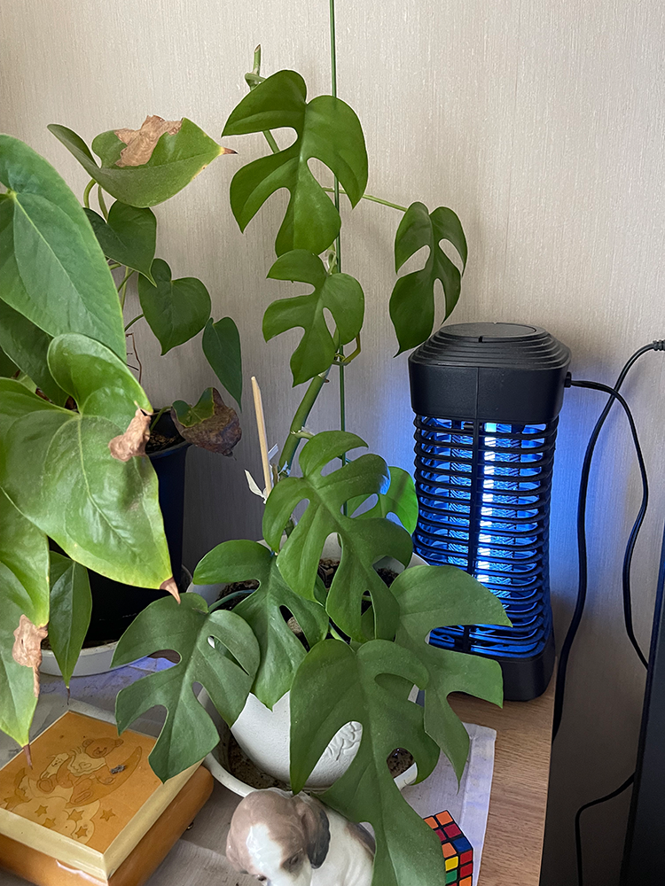
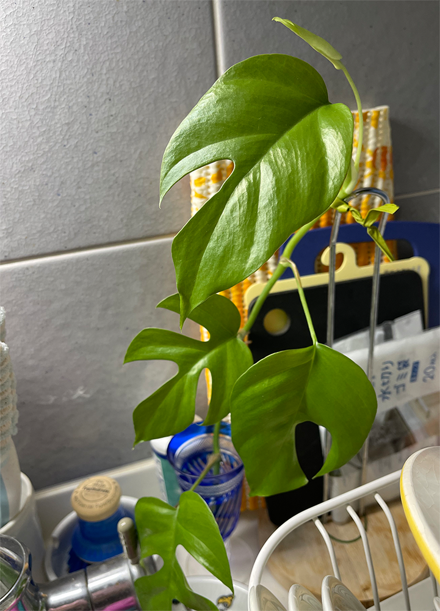
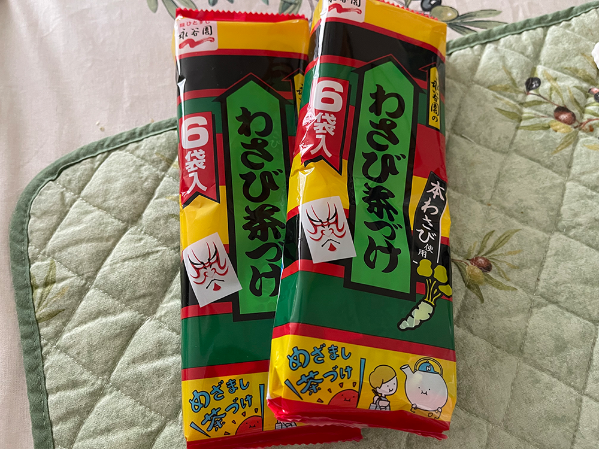
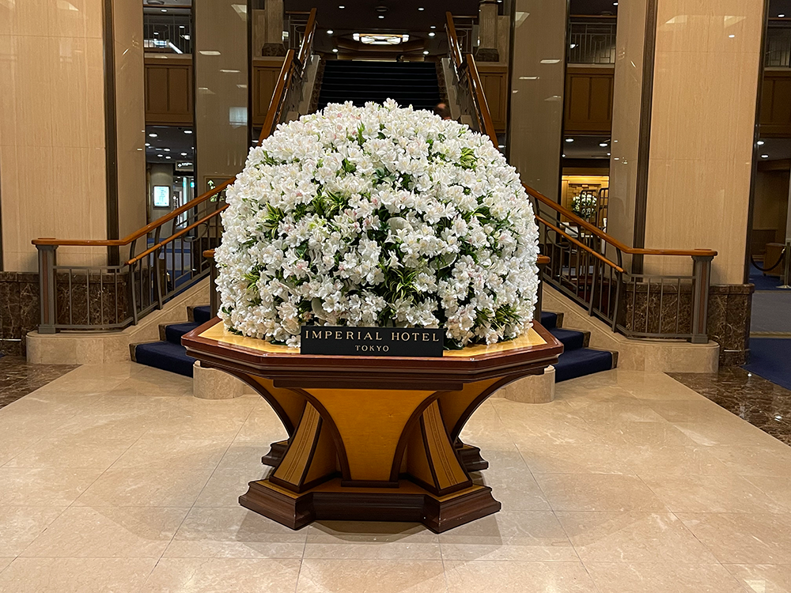

2026.06.16
空心菜とベビーコーンのタイ風炒め（パッパッカーナ・タオチオ）
一昨日、大量のベビーコーンを向いた。
ゴミ袋がいっぱになるほどだったけれど、その時は写真を取り忘れた（汗）。
昨日はそのベビーコーンを使って、空心菜と一緒にタイ風の炒め物にした。
調味料はタイのタオチオという味噌みたいなものと唐辛子とにんにく。
タイで覚えたお気に入りの味。
BGMはMichael Jackson.

一昨日、大量のベビーコーンを向いた。
ゴミ袋がいっぱになるほどだったけれど、その時は写真を取り忘れた（汗）。
昨日はそのベビーコーンを使って、空心菜と一緒にタイ風の炒め物にした。
調味料はタイのタオチオという味噌みたいなものと唐辛子とにんにく。
タイで覚えたお気に入りの味。
BGMはMichael Jackson.
小さな苗だったモンステラが、 ついに天井を目指し始めた。 支柱では追いつかず、 30cmほどカット。

切った先はキッチンで保護観察中。 我が家の植物たちは、 だいたいこうして増えていく。

昨日は、眠剤がまったく効かず、ほとんど眠れなかった
薬を追加したけれど、それ以上飲んだら危ないと思うところでやめた。
朝一番でマンモグラフィーの検査へ。
寝不足で体も痛く、少し気持ち悪かったけれど、なんとか終わった。
帰宅してから、倒れた・・・
でも、検査できず・・・
本来ならば、先週血液検査をするはずだったのだが、
受付のミスで、エコーとしか書いておらず、朝ごはん食べてしまい、
今週に変更。
ところが、中性脂肪を下げる薬が切れていたため、
それでは血を抜いても意味がない、と言われ、2週間後に変更・・・
今日は「検査の日」ではなく、「検査できないことが分かった日」だった。
今日はわさび茶漬けパスタにしようと思い、
いつものかめやのわさび茶漬けを探しに祖師ヶ谷大蔵駅前のOXに行ったのだが、
ま、昨日経堂OXにもなかったくらいだから、当然なくて、
カルディにも行ってみてもなく、オオゼキに行ったら、
な、なんと、幻の永谷園のわさび茶漬けを発見！
ここ数年どこにもなかったのに、まさかの出会い。
迷わず２袋をゲット。

採用ね、以前面接を受けた時の面接官が言った言葉「人事は人を切るのが仕事です」
という言葉に強い違和感を覚えた。
こういう人に採用を任せてはいけない、
そう思ったことを今でも覚えている。
だから、今回の採用のお仕事では、人を選別することではなく
会社の価値を高めることから始めたい。
前職で培った採用スキル、そして経営セミナーで学んだことを、
これから活かしていこうと思う。
この日は、母と帝国ホテルの嘉門へ。
鉄板焼きと言うと、お肉に目が行きがちですが、私がいつも楽しみにしているのは、それだけではありません。
料理が最も美しく見える器、季節を感じる盛り付け、スタッフのさりげない気配り。
どれも、自宅で料理を作るときや、お花を飾るときのヒントになります。
「美味しい」は味だけではなく、空間やサービスも含めて完成するもの。
そんなことを改めて感じた一日でした。
